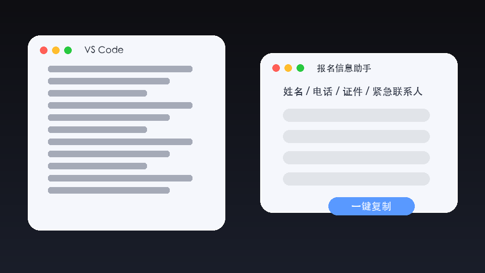

马拉松报名
找入口、准备字段、减少临场手工时间，把抢时间变成流程准备。
AI 的难点不只是学习，而是工具、黑话、新闻、案例同时涌进来。先建立地图，焦虑会小很多。
问答、总结、写草稿，是大多数人接触 AI 的第一站。
文字、图片、视频、音乐、代码开始合流，表达能力被放大。
Agent 开始调用浏览器、文件、代码和电脑，把任务往前推进。
不需要先学数学，也不需要记住所有名词。先抓住 6 个基本概念，就能听懂大多数 AI 讨论。
把它当成一个有强大模式识别能力的协作者，但不要把它当成事实权威。
工具更新太快，排名很快过期。更稳定的判断方式是：我要解决什么任务，给它什么资料，结果怎么验证。
问答、搜索、写作、图片、视频、代码和自动化，最好按场景分层，而不是混在一个榜单里。
它能观察环境、拆任务、调用工具、执行步骤、回报结果。能力更强，也更需要权限控制。
真正有用的 AI，不是回答得漂亮，而是能把你的重复劳动变成可复用流程。
找入口、准备字段、减少临场手工时间，把抢时间变成流程准备。
让 AI 扫描、分类、重命名、生成目录和处理摘要。

用自然语言做一个报名信息助手，从需求到界面再到可用功能。